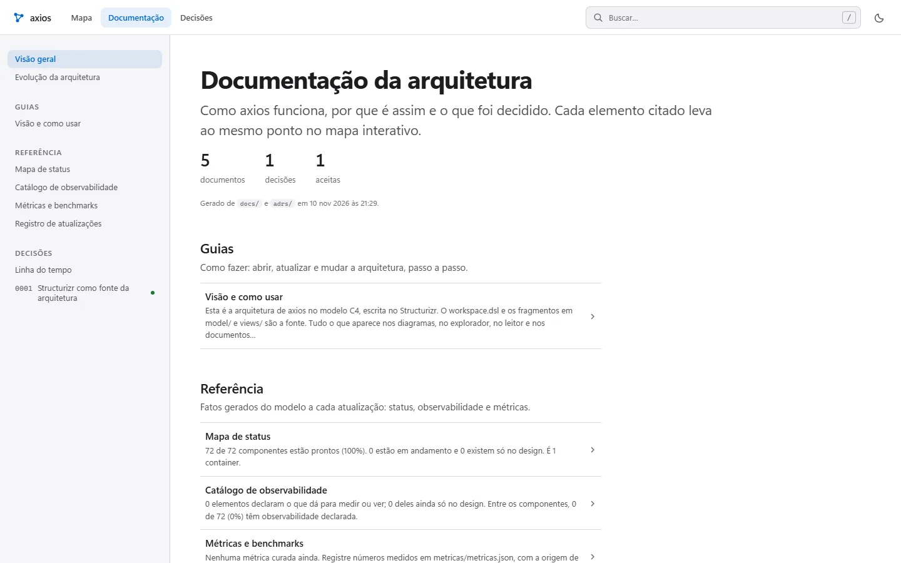

Demo · axios
A arquitetura do axios, versão por versão.
Cinco releases reais do axios, de v1.17.0 a v1.21.1. Cada mapa foi conferido contra o código por um segundo agente de IA antes de entrar na linha do tempo.
- v1.17.0
- v1.18.0
- v1.19.0
- v1.20.0
- v1.21.1

Explorador
Mapa navegável: visões, fluxos passo a passo, saúde dos componentes e a linha do tempo entre versões.
Abrir o explorador →
Leitor
Documentação gerada do mesmo modelo: componentes, decisões e o que mudou em cada versão, para ler em sequência.
Abrir o leitor →O axios não é um projeto meu; o mapa usa só o código público das tags. Código do Lodemap, licença MIT: github.com/skarL007/lodemap.